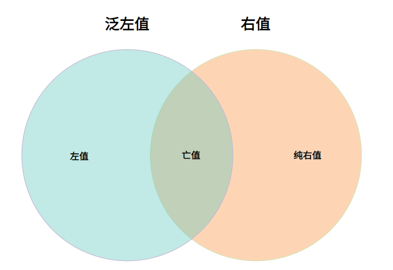

早年的 C++ 中已经出现了左值与右值这两个基本概念，但并不重要，平时也不怎么会用到。直到 C++11 引入了右值引用等新特性，这俩概念终于翻身做起了主人——它们是理解移动与转发语义的重要基础。
#值
所有值类别可用以下韦恩图描述：
#左值(Lvalue)，右值(Rvalue)
先来谈谈什么是左值与右值。
一般来说，可以放在等号左边的就是左值，只能放在等号右边的就是右值。
更准确的说，可以取地址并具有变量名的是左值，左值 L-value 中的 L 既可以认为是 Left，也可以理解为 Location，即地址，换句话说就是其在内存中有可访问的地址。
相反，不是左值的值，就是右值，其只存在于临时寄存器中，无法在内存中寻址，不具有持久性，因而无法放在等号左侧进行赋值操作，并且同一个作用域里的两个相等的右值事实上是两个不同的右值。例如：
char *ch = "hello"; // ch 是左值，"hello" 是字符串字面量，也是左值
int b = 1, c = 2; // b, c 是左值，1, 2 是右值
int a = b + c; // a 是左值，b + c 是右值
a = b; a += c; ++a; // 这些表达式都是左值
a++; // 自增后置返回的是一个自增前的临时副本，故为右值
int *p = &a; // a 的地址不在内存中存着，故 &a 为右值
3 = a; // ERROR! 3 是右值，不能放在等号左边
b + c = &3; // ERROR! 右值不能放左边，且不能取地址#亡值(Xvalue)，纯右值(PRvalue)，泛左值(GLvalue)
右值又分为亡值与纯右值。
在 C11 之前，右值与纯右值就是同个概念，亡值是随着 C11 的右值引用概念引入的。如果用左值初始化对象，则会调用复制构造函数或 operator=(const type &) 来进行一次数据的拷贝；而如果用右值初始化，则会调用移动构造函数或 operator=(const type &&) 来移动数据，避免了拷贝，提高了效率。当数据移动完成后，用于初始化的右值已经完成了任务，马上消亡，故称其为亡值。亡值常见的有以下两种：
-
返回类型为对象右值引用的表达式，如
std::move(x)； -
转换到对象右值引用类型的表达式，例如
static_cast<char&&>(x)；
纯右值就是右值中不属于亡值的那一部分值，也就是常见的（除字符串外的）字面量、运算表达式、lambda 表达式、非引用类型的函数返回值等无法在内存中占据存储空间的值。
泛左值就是亡值+左值。
#左值引用，右值引用
#左值引用
C++11 以前，所有的引用都是左值引用，用 Type& 表示，只能用左值进行初始化，初始化时即绑定，不能更改绑定对象，其效果相当于为指定变量起"别名"，对引用变量的所有操作都会等效地施加在原变量上（对应内存中的实际数据是一致的），例如：
int x = 0;
const int y = 1;
int& ref_a = x; // ref_a 为 int& 型，绑定在 int 型的 x 上。这里 x 是否初始化不影响
ref_a++; std::cout << x; // output: 1 通过引用修改原变量
int& ref_b; // ERROR! 引用类型必须初始化
int& ref_c = 3; // ERROR! 左值引用必须用左值进行初始化
int& ref_d = y; // ERROR! 常量类型只能绑定到常量引用（确实很符合直觉）
const int& ref_d = x; // OK! 但常量引用可以绑定非常量变量
const int& ref_e = 3; // OK! 常量引用甚至还可以用右值初始化，此时 3 存储在内存中的一个临时变量。但由于是 const，无法通过 ref_e 修改。
// 相当于 const int temp = 3; const int& ref_r = temp;注意，引用不是对象，其不必占用存储，尽管编译器会在需要实现所需语义的情况下分配存储（如引用类型的非静态数据成员），所以不存在引用的数组、指向引用的指针、引用的引用。
由于引用只是取别名，为引用变量初始化绑定对象的过程并不发生拷贝操作，能大大提高程序运行效率，故函数形参常采用引用传值的方式，避免不必要的拷贝操作。
另一个很相似的概念是指针，它也可以提供修改原变量的另一种途径，但引用的优势在于更安全，引用变量必须被初始化，故不像指针会出现
nullptr或野指针的情况。
#右值引用
上面说到常量左值引用可以被右值初始化，但无法修改变量；非常量左值引用可以修改，但无法被右值初始化。如果我们在写某个函数时出现了实参为右值，并且函数体内还需要对该参数进行一定修改的情况，现有的工具无法满足可行性，如果在传参前将右值赋给左值后再传入左值，则增加了内存开销。C++ 作为一门对内存开销非常敏感的语言，在这一点上提出了优化，那就是右值引用。
右值引用类型用 Type&& 表示，与左值引用相反，其只能用右值进行初始化，即便是常量右值引用也不例外。在引入了右值引用后，函数就可以写为：
void func( int&& num ) {
std::cout << ++num;
}
func(6); // output: 7这样函数就可以以右值为实参传入函数 func(int&&) 中。在引入右值引用这一概念之前，传统常量左值引用传递 func(const int&) 无法实现这一功能。
当右值绑定给一个右值引用 rref 时，该右值的生命周期就会被延长至与 rref 相同。
以右值参数调用函数时优先选择接收右值引用参数的重载版本。
#引用折叠
通过模板或 typedef / using 中的类型操作可以构成引用的引用，即右值引用的右值引用折叠成右值引用，其余组合均折叠成左值引用：
using lref = int&;
using rref = int&&;
int n;
lref& r1 = n; // r1 的类型是 int&
lref&& r2 = n; // r2 的类型是 int&
rref& r3 = n; // r3 的类型是 int&
rref&& r4 = 1; // r4 的类型是 int&&#万能引用
对于模板函数，希望传入的参数类型既能是左值，又能是右值，对于初学者而言，或许会通过以下代码实现：
template< class T >
void func( T& t ) {} // 接受左值
template< class T >
void func( T&& t ) {} // 接受右值以上为两种重载形式，显得很累赘。一种简化代码的方式是万能引用，只需一个函数就能实现既能接受左值又能接受右值：
template< class T >
void func( T&& t ) {}看似只保留了初始版本形参为右值引用的那一个重载版本，但事实上如果一个变量或者参数被声明为 T&&，其中 T 是被推导的类型，那这个变量或者参数就会被视为万能引用——当传入参数为左值时，模板类型推导会将 T&& 推导为左值引用；当传入参数为右值时，模板类型推导会将 T&& 推导为右值引用。从而大大提高了编程灵活性以及代码的简洁程度。
虽然为初学者加大了代码理解的难度
#移动语义
#深浅拷贝
谈移动语义，就绕不开先谈深浅拷贝。C++11 之前，当我们要进行字符数组 char* 的拷贝操作时，只有这两种拷贝方式。
浅拷贝是指，将新字符数组 char* dst 指针指向原字符数组 char* src 所在地址，开销低，但容易产生重复释放同一片内存的糟糕情况，不安全。
深拷贝是指，为新字符数组 char* dst 分配一片新的等大内存，然后将原字符数组 char* src 的所有字符依次拷贝，缺点是时间开销大，并且存在原字符数组。
#移动拷贝
C++11 引入了移动语义，旨在进行一些转移所有权的操作，顾名思义就是资源转为己有，而另一方则失去资源所有权，采用 std::move() 函数实现。
#std::move
// 一个示例实现
template< class T >
typename std::remove_reference<T>::type&& move( T&& t ) noexcept {
using ReturnType = remove_referece_t<T>&&;
return static_cast<ReturnType>(param);
}它仅仅做了一件事，那就是将实参转换为右值引用，其中 std::remove_reference 相当于是做了一个去除引用保留原始数据类型的操作。
#移动构造函数
引入移动语义这一新特性之后，移动构造函数也随之产生，其接收同类型右值引用的实参，进行资源的迁移，将深浅拷贝两者的优势集中，既减少了开销，也无需担心出现 double free 的情况。
#完美转发
完美转发指的是利用一个接受任意实参的函数模板将参数转发到其它函数，目标函数会收到与转发函数完全相同的实参，从而转发调用。转发函数实参是左值那目标函数实参也是左值，转发函数实参是右值那目标函数实参也是右值。
由于万能引用的存在，函数模板 func(Type&&) 内部无法知道形参对应的实参到底是个左值还是右值，如果要用到该形参作为其他函数实参，就会出现问题，这里就要用到 std::forward。
#std::forward
函数原型如下：
template< class T >
T&& forward( typename std::remove_reference<T>::type& t ) noexcept;
template< class T >
T&& forward( typename std::remove_reference<T>::type&& t ) noexcept;其作用就是返回参数对应的引用形式：传入左值返回左值引用，传入右值返回右值引用。
#转发函数
直接上例子：
void func( int& t ) { std::cout << "lvalue\n"; }
void func( int&& t ) { std::cout << "rvalue\n"; }
template< class T >
void FORWARD( T&& t ) {
func(t); // t 因为能被取地址，故认为是左值，恒定输出 lvalue
func(std::forward<T>(t)); // 此处 T 会按实际传参类型进行推导
func(std::move(t)); // std::move 转为右值，恒定输出 rvalue
}
int a = 0;
FORWARD(a); // output: lvalue lvalue rvalue
FORWARD(1); // output: lvalue rvalue rvalue
/*
* std::forward<int>(a), std::forward<int&>(a), std::forward<int&&>(a) 分别会被转为
* 右值引用、左值引用、右值引用
*/
FORWARD(std::forward<int>(a)); // output: lvalue rvalue rvalue
FORWARD(std::forward<int&>(a)); // output: lvalue lvalue rvalue
FORWARD(std::forward<int&&>(a)); // output: lvalue rvalue rvalue